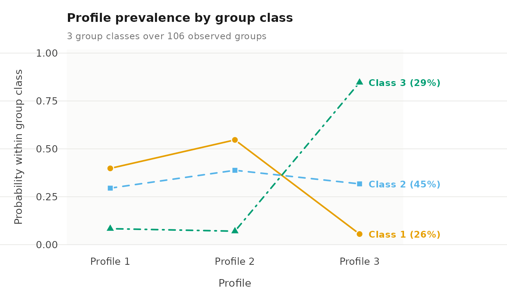
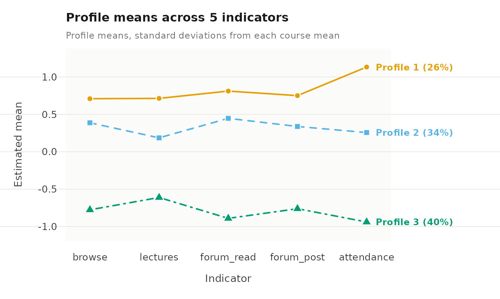

Case study: Multilevel latent profile analysis of course engagement
Written by Mohammed Saqr and Sonsoles López-Pernas
Source:vignettes/articles/case-engagement-profiles.Rmd
case-engagement-profiles.RmdMultilevel latent profile analysis (MLPA) is used when observations are nested within higher-level units and the aim is to identify latent profiles at the observation level while also describing how the prevalence of those profiles varies across units. Examples include repeated measurements nested within persons, students nested within schools, patients nested within clinics, or employees nested within organizations. Because observations from the same higher-level unit may be dependent, MLPA extends standard latent profile analysis by modeling the data at two levels. Latent profiles are defined at Level 1, whereas latent classes at Level 2 describe differences between higher-level units in the composition of those profiles.
Consider a repeated-measures application. A person may occupy different profiles on different occasions. Let denote the profile of person at occasion , and let denote the person’s Level-2 latent class. The model estimates the conditional probability that an observation belongs to profile given that the person belongs to class . In this way, MLPA separates variation across repeated observations from variation between persons in the profiles they tend to occupy.
This distinction is also central to VaSSTra (López-Pernas & Saqr, 2023), which separates state diversity from person heterogeneity using a sequential estimation strategy. VaSSTra first establishes a common state space across all observations and then summarizes each person’s repeated observations within that space. MLPA takes a different approach: the observation-level profiles and person-level classes are estimated jointly within a single model. Both approaches allow the same person to occupy several states across repeated observations, but they differ in how the states and the person-level representation are constructed.
The latents package fits MLPA models using maximum
likelihood with multiple expectation-maximization starting values. In
this vignette, we work through a three-profile, three-student-class
example using longitudinal data on course engagement. The focus is on
specifying, estimating, and interpreting the model. The companion guides
cover model evaluation, covariates and staged
estimation, and latent
transitions.
Longitudinal course engagement
The engagement example revisits the setting studied by Saqr and
López-Pernas (2021), The longitudinal trajectories of online
engagement over a full program. The study distinguished three
engagement states within courses and three longer-term student
trajectories. Here, we use the bundled synthetic
course_engagement data to reproduce the same type of nested
longitudinal design. The purpose of the example is to illustrate the
analytical questions and workflow; the estimates reported below apply
only to the synthetic package data.
Each row represents one student’s enrolment in one course. Enrolments
are therefore the Level-1 observations, while students are the Level-2
units within which those observations are nested. A student who takes
several courses appears on several rows. The variable
student identifies the Level-2 unit, course
identifies the course associated with each enrolment, and
sequence records the position of that course in the
student’s observed history. Students need not contribute the same number
of enrolments. The MLPA model accounts for the grouping of enrolments
within students; it does not include a separate course-level random
effect or latent structure.
Five activity indicators describe the student’s engagement during
each enrolment. The indicators are simulated on the
log1p(count) scale and standardized within course. Each
value can therefore be interpreted as the enrolment’s distance from the
mean of that particular course, expressed in course-specific standard
deviations. A value above zero indicates more activity than the course
average, whereas a value below zero indicates less activity than the
course average.
This within-course standardization is important for the interpretation of the profiles. Raw activity volumes can differ substantially across courses because of differences in course design, duration, or expected workload. The indicators therefore describe a student’s engagement relative to other students taking the same course rather than relative to the cohort as a whole. The profiles identified below are therefore recurring patterns of relative engagement within courses.
| Variable | Definition |
|---|---|
browse |
Course page views. |
lectures |
Lecture videos viewed. |
forum_read |
Forum posts read. |
forum_post |
Forum posts written. |
attendance |
Days active in the course. |
previous_grade |
Standardized grade from the preceding course, with an entry grade at the first course. |
The indicator vector vars selects the five measures used
to define engagement profiles. Identifiers and
previous_grade stay outside the measurement model. The
package accepts a character vector of column names.
vars <- c("browse", "lectures", "forum_read", "forum_post", "attendance")Descriptive statistics and clustering within students
The descriptives() function summarizes the distributions
of the activity indicators and estimates their intraclass correlations
(ICCs), using student as the grouping variable. The ICC
describes how much of the variation in an indicator is attributable to
differences between students rather than variation across enrolments
within the same student. It is defined as
Here, is the variance between students and is the variance across enrolments within students.
An ICC near zero indicates little between-student variation in an indicator’s average level, whereas an ICC near one indicates little variation across enrolments within students. With the one-way random-effects estimator used here, an estimated ICC can occasionally be negative because of sampling variation; such estimates are generally interpreted as indicating little or no detectable between-student clustering for that indicator.
ICCs describe the clustering of each activity indicator separately. They do not determine how many Level-1 profiles or Level-2 student classes should be fitted. In particular, students may differ in the composition of their engagement profiles even when their average levels on the individual indicators are similar. The ICCs are therefore descriptive measures of the multilevel structure in the observed indicators.
The descriptive table reports means, standard deviations, ranges, and ICCs for the activity indicators, together with sample sizes and missingness.
descriptives(course_engagement, vars = vars, id = "student")#> variable n n_missing mean sd min max n_distinct n_groups icc
#> 1 browse 1422 0 -2.813e-05 0.9891 -3.14 2.49 398 106 0.19229
#> 2 lectures 1422 0 -4.219e-05 0.9889 -2.91 3.22 399 106 0.08779
#> 3 forum_read 1422 0 7.032e-05 0.9890 -2.73 2.81 400 106 0.22403
#> 4 forum_post 1422 0 -2.110e-05 0.9890 -2.61 3.10 397 106 0.15035
#> 5 attendance 1422 0 7.736e-05 0.9889 -2.45 2.41 401 106 0.22145The data comprise 1,422 enrolments from 106 students, with complete
observations on all activity indicators. Because the indicators were
standardized within course, their pooled means are approximately zero
and their standard deviations are close to one. The estimated ICCs range
from 0.088 for lectures to 0.224 for
forum_read: about 9% to 22% of the variance in the
individual indicators is attributable to differences between students.
Most variation therefore occurs across enrolments within students, while
a meaningful share reflects between-student differences. This
combination of within- and between-student variation is the structure
that the multilevel model is designed to represent.
Three engagement profiles and three student classes
The multilpa() function estimates engagement profiles
from the five activity indicators and student classes from the
distribution of those profiles across each student’s enrolments. A
3 × 3 model contains three Level-1 enrolment profiles
and three Level-2 student classes. Each student class is characterized
by a different set of probabilities for the three enrolment profiles,
while an individual student may contribute enrolments to more than one
profile.
Each engagement profile is defined by a mean and variance for every activity indicator. These profile-specific parameters are shared across student classes. Thus, a given profile represents the same pattern of engagement regardless of which student class it occurs in. What differs across student classes is the relative frequency with which their enrolments occupy the profiles.
The conditional profile probabilities introduced above can be written as
where is the probability that an enrolment belongs to profile when the student belongs to class . For each student class, these probabilities range from zero to one and sum to one across the three profiles. The Level-2 class probability
gives the proportion of students represented by class .
The model relies on several distributional and independence assumptions. Within each profile, the activity indicators are modeled as Gaussian, and the same profile definitions apply to all students. Students are treated as independent Level-2 units, and enrolments within a student are conditionally independent given the student’s latent class. With the default diagonal covariance structure, the activity indicators are additionally assumed to be independent within each profile. Substantial residual associations between indicators after accounting for profile membership may indicate that this assumption is too restrictive and can affect the resulting profile solution.
The 3 × 3 model considered here is one candidate representation of the latent structure. The evaluation vignette shows how this model can be compared with alternatives containing different numbers of Level-1 profiles and Level-2 student classes.
The model is estimated from ten random starts to check whether
different initial values lead to the same likelihood solution. Setting
seed = 1 makes these starts reproducible while restoring
the caller’s random state after estimation. A tighter convergence
criterion, specified through tol, is used to support the
subsequent calculation of standard errors. The argument
time = "sequence" retains the order of each student’s
courses so that enrolment histories can be displayed in sequence. Course
order does not enter the present model, however: the model describes the
composition of profiles across a student’s enrolments.
Transitions between successive profiles are addressed by the separate
longitudinal model.
fit <- multilpa(course_engagement, vars, id = "student", time = "sequence",
n_profiles = 3, n_group_classes = 3, n_starts = 10,
max_iter = 2000, tol = 1e-10, seed = 1)Profile means
Printing the fitted model gives a compact summary of the Level-1 profile solution. Each row represents one engagement profile and reports its estimated mean on each activity indicator, together with its estimated enrolment membership.
fit#> Two-level latent profile analysis: 3 profiles, 3 group classes
#> 1422 individuals in 106 groups; varying diagonal residual covariance (VVI)
#> Log likelihood: -8348.428714 | AIC: 16772.857 | BIC (groups): 16874.068
#> Converged: TRUE | iterations: 164 | best start: 4/10
#>
#> profile browse lectures forum_read forum_post attendance count proportion
#> 1 0.7088 0.7134 0.8109 0.7502 1.1326 369.2 0.2596
#> 2 0.3870 0.1855 0.4463 0.3375 0.2562 477.9 0.3361
#> 3 -0.7768 -0.6123 -0.8914 -0.7623 -0.9400 575.0 0.4043
#>
#> Variances and standard errors: get_results(x, "profiles").
#> Every other table: get_results(x, what = ), or get_results(x, "all").Profile 1 has the highest estimated mean on all five activity
indicators, profile 2 has intermediate means, and profile 3 has the
lowest means. For attendance, the profile means are 1.133,
0.256, and -0.940 standard deviations from the corresponding course
mean. For browse, they are 0.709, 0.387, and -0.777. The
profiles therefore primarily distinguish different levels of recorded
activity, although the separation varies across indicators. For example,
the difference between profiles 1 and 2 is substantially larger for
attendance than for browse.
Profile numbers are arbitrary labels assigned during estimation and have no inherent substantive meaning. In this fitted model, we refer to profiles 1, 2, and 3 as higher activity, intermediate activity, and lower activity, respectively. The numbering may change when the model is fitted again or when a different specification is estimated. Profile labels should therefore be based on the estimated indicator means rather than on the profile numbers themselves.
Profile and class sizes
The get_results() function extracts result tables from
the fitted model. The "counts" table reports
effective membership at both levels: the estimated
number of enrolments in each Level-1 profile and the estimated number of
students in each Level-2 class. Effective membership is obtained by
summing posterior membership probabilities rather than assigning each
case to its single most likely profile or class. For example, a student
with a posterior probability of 0.80 of belonging to class 2 contributes
0.80 to the effective size of that class. Because these probabilities
are summed across enrolments or students, the resulting counts need not
be whole numbers. Counts based on assigning each case to its most likely
profile or class, by contrast, would always be integers.
get_results(fit, "counts")#> level class effective_count effective_proportion
#> 1 individuals 1 369.17 0.2596
#> 2 individuals 2 477.88 0.3361
#> 3 individuals 3 574.95 0.4043
#> 4 groups 1 27.65 0.2609
#> 5 groups 2 47.32 0.4464
#> 6 groups 3 31.03 0.2927The lower-activity profile has the largest effective membership, accounting for 575.0 enrolments, or 40.4% of the total. The higher-activity profile accounts for 369.2 enrolments, or 26.0%. At Level 2, student class 2 is the largest, with an effective membership of 47.3 students, corresponding to 44.6% of the sample. Classes 1 and 3 have effective memberships of 27.7 and 31.0 students, respectively.
How students differ in their profile composition
The "profile_probabilities" table shows how the three
enrolment profiles are distributed within each student class. For each
class, it reports the probability of an enrolment belonging to each
Level-1 profile, together with the prevalence of that Level-2 class
among students. Each row therefore answers two related questions:
which profiles characterize students in this class, and how
common is the class in the student population?
get_results(fit, "profile_probabilities")#> group_class profile probability group_class_probability
#> 1 1 1 0.39806 0.2609
#> 2 1 2 0.54671 0.2609
#> 3 1 3 0.05523 0.2609
#> 4 2 1 0.29483 0.4464
#> 5 2 2 0.38802 0.4464
#> 6 2 3 0.31715 0.4464
#> 7 3 1 0.08322 0.2927
#> 8 3 2 0.07012 0.2927
#> 9 3 3 0.84666 0.2927Student class 1 is characterized mainly by the higher-activity and intermediate-activity profiles. Conditional on membership in class 1, the probabilities of an enrolment occupying profiles 1, 2, and 3 are 0.398, 0.547, and 0.055, respectively. Student class 2 has a more balanced profile composition, with corresponding probabilities of 0.295, 0.388, and 0.317. Student class 3 is strongly characterized by the lower-activity profile: an enrolment from a student in this class has a probability of 0.847 of occupying profile 3. The estimated prevalences of student classes 1, 2, and 3 are 0.261, 0.446, and 0.293, respectively.
The probability plot provides a visual comparison of these class-specific profile compositions on a common scale from zero to one. Each line represents a student class, and each point shows the conditional probability of an enrolment occupying a particular profile within that class. Differences in the shape of the lines therefore show how the distribution of engagement profiles varies across student classes.
plot(fit, what = "probabilities")
Class 2 has an almost level profile because its probabilities are similar across the three engagement profiles. In contrast, class 3 rises sharply to 0.847 for the lower-activity profile, whereas class 1 falls to 0.055 for that same profile. These differences illustrate how student classes can have distinct profile compositions even though students within each class may still occupy more than one engagement profile across their enrolments.
Checking the estimation
The "starts" table reports the final log likelihood,
convergence status, and variance-boundary status for each random start.
Agreement across starts provides evidence that the estimation is
repeatedly reaching the same solution, although it does not establish
that this solution is the global maximum.
get_results(fit, "starts")#> start log_likelihood converged iterations error boundary
#> 1 1 -8348 TRUE 168 <NA> FALSE
#> 2 2 -8348 TRUE 155 <NA> FALSE
#> 3 3 -8348 TRUE 169 <NA> FALSE
#> 4 4 -8348 TRUE 164 <NA> FALSE
#> 5 5 -8348 TRUE 165 <NA> FALSE
#> 6 6 -8348 TRUE 160 <NA> FALSE
#> 7 7 -8348 TRUE 165 <NA> FALSE
#> 8 8 -8348 TRUE 158 <NA> FALSE
#> 9 9 -8348 TRUE 169 <NA> FALSE
#> 10 10 -8348 TRUE 138 <NA> FALSEAll ten starts converge to a log likelihood of approximately -8348.4, and none has an active variance bound. The identical likelihoods across starts indicate that the fitted solution is stable with respect to the starting values used in this analysis.
Profile means as a plot
plot() displays the estimated profile means across the
five activity indicators. Because the indicators were standardized
within course, the vertical axis is expressed in standard deviations
from the corresponding course mean. Line types and point symbols
distinguish the profiles in addition to colour.
plot(fit, subtitle = "Profile means, standard deviations from each course mean")
The three profiles retain the same ordering across all five indicators, with profile 1 highest, profile 2 intermediate, and profile 3 lowest. The distance between profiles 1 and 2 varies across indicators: they are relatively close on page browsing but more clearly separated on attendance, consistent with the estimated means reported above. Because the profiles differ mainly in overall elevation rather than in the shape of their indicator patterns, the principal contrast is the overall amount of recorded activity.
Reading each student’s course history
The "sequences" table arranges each student’s enrolments
in course order and shows the profile assigned to each enrolment.
Assignment is based on the profile with the highest posterior
probability, so these sequences provide a simplified summary of the
fitted model and do not represent classification uncertainty. In the
wide format, each row corresponds to a student and successive observed
courses appear in columns.
get_results(fit, "sequences", format = "wide") |> head(4)#> group group_class sequence_1 sequence_2 sequence_3 sequence_4 sequence_5 sequence_6
#> 1 1 3 2 2 3 3 3 3
#> 2 2 3 3 3 3 3 3 3
#> 3 3 1 1 2 2 2 2 2
#> 4 4 1 1 2 1 1 2 2
#> sequence_7 sequence_8 sequence_9 sequence_10 sequence_11 sequence_12 sequence_13
#> 1 3 3 3 3 3 3 3
#> 2 3 3 3 3 3 3 3
#> 3 2 1 2 2 2 2 1
#> 4 2 1 2 1 2 2 2
#> sequence_14 sequence_15
#> 1 <NA> <NA>
#> 2 <NA> <NA>
#> 3 1 <NA>
#> 4 <NA> <NA>Students 1 and 2 are assigned to student class 3. Student 1 is
assigned to the intermediate-activity profile for the
first two observed courses and to the lower-activity
profile for the courses that follow, whereas student 2 is assigned to
the lower-activity profile throughout the observed
sequence. Students 3 and 4 are assigned to class 1 and have enrolments
classified as both higher activity and
intermediate activity. These patterns illustrate the
class-specific profile compositions described above, but they should not
be interpreted as estimated transition processes. Trailing
NA values indicate courses that were not observed for that
student rather than missing profile assignments within the observed
history.
The "sequence_summary" table summarizes the modal
student-class assignments and the amount of longitudinal information
available within each class. It reports the number of students,
enrolments, and observed courses in each assigned class. The
gaps column counts students with an unobserved occasion
between observed occasions in their sequence; simply having a shorter
observed history does not constitute a gap.
get_results(fit, "sequence_summary")#> group_class groups observations mean_length median_length shortest longest complete gaps
#> 1 1 25 330 13.20 13.0 11 15 4 0
#> 2 2 51 689 13.51 14.0 10 15 13 0
#> 3 3 30 403 13.43 13.5 10 15 7 0The modal assignments place 25, 51, and 30 students in classes 1, 2, and 3, respectively. Their mean sequence lengths are 13.20, 13.51, and 13.43 observed courses. Thus, the classes have similar amounts of longitudinal information, even though their profile compositions differ substantially. None of the observed sequences contains an internal gap.
Interpretation
Profile composition and profile order describe different aspects of the data. Two students may spend similar proportions of their enrolments in the same profiles while encountering those profiles in a different sequence. The MLPA estimated here captures the former by modeling class-specific profile probabilities, but it does not model the ordering of profiles over time. The transition vignette extends the analysis to that question by estimating probabilities of moving from one profile to another across successive observations.
Limitations
The bundled data are designed to reproduce the structure of the published case for instructional purposes; they do not provide a numerical replication of the original study. The published analysis used latent class analysis followed by hidden Markov modeling, whereas the present example fits a joint MLPA model. The resulting three student classes therefore summarize differences in profile composition across enrolments rather than reproducing the longitudinal trajectories estimated in the original study.
The 3 × 3 specification should also be treated as a candidate model rather than a definitive representation of the latent structure. Its adequacy depends on comparisons with alternative numbers of Level-1 profiles and Level-2 classes, as well as on the model’s distributional assumptions. In particular, the default diagonal covariance structure assumes that the activity indicators are conditionally independent within each profile. Residual associations among the indicators may violate this assumption and alter the estimated profile solution. In addition, modal profile and class assignments simplify the fitted model by ignoring classification uncertainty. The evaluation vignette examines these issues using the same data and candidate specification.
References
López-Pernas, S., & Saqr, M. (2023). From variables to states to trajectories (VaSSTra): A method for modelling the longitudinal dynamics of learning and behaviour. In Proceedings TEEM 2022: Tenth International Conference on Technological Ecosystems for Enhancing Multiculturality (pp. 1169-1178). Springer Nature Singapore. doi:10.1007/978-981-99-0942-1_123.
Saqr, M., & López-Pernas, S. (2021). The longitudinal trajectories of online engagement over a full program. Computers & Education, 175, 104325. doi:10.1016/j.compedu.2021.104325.